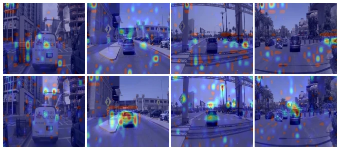
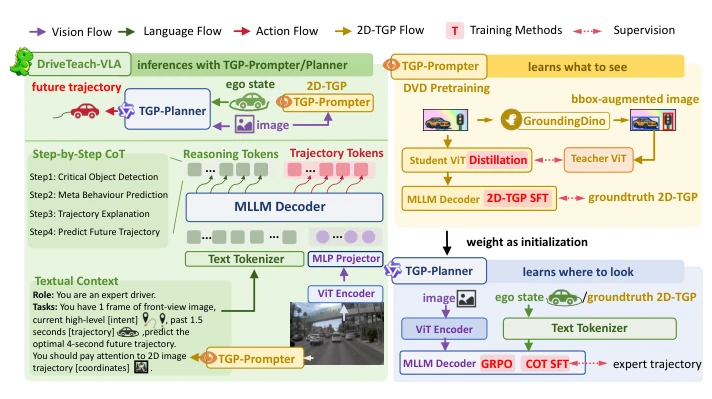
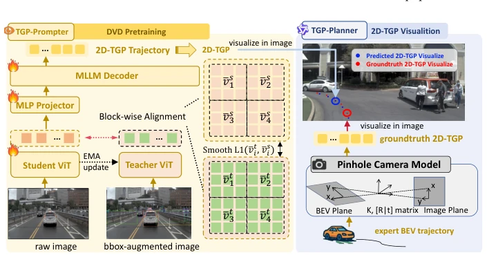
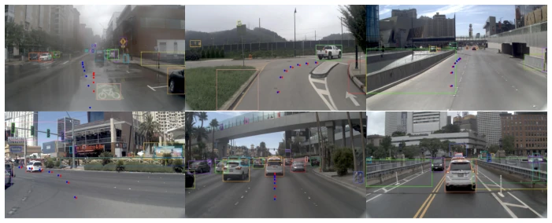
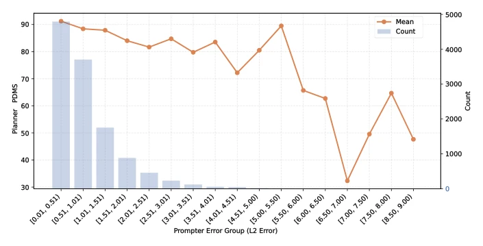
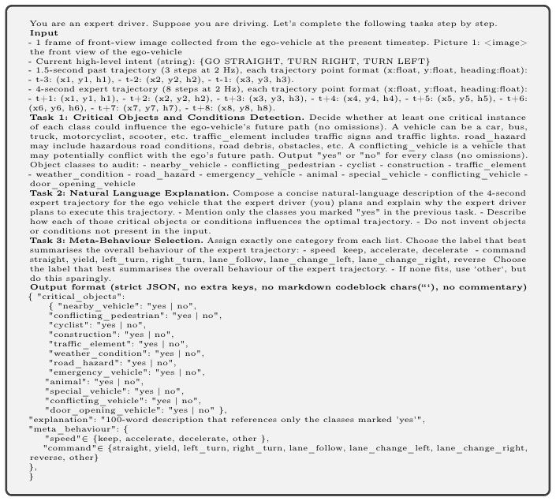
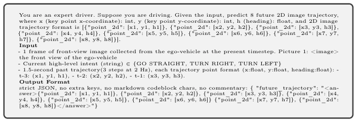
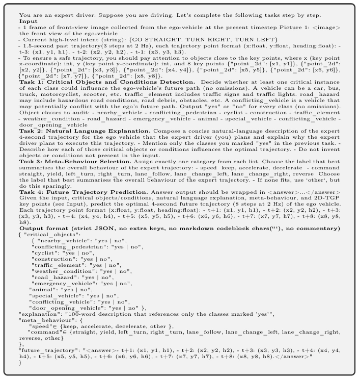

This paper delivers a 'visual lesson' to VLA autonomous driving models: do not just memorize traffic rules, but know where to look. Existing VLA models rely too heavily on text question answering (VQA) and chain-of-thought (CoT), causing attention maps to scatter like pepper, lacking spatial grounding. DriveTeach-VLA employs a dual-model architecture, one responsible for 'seeing' (TGP-Prompter), one for 'driving' (TGP-Planner). Using DVD to distill visual priors, and 2D-TGP to guide spatial positions. The results are indeed impressive, leading with PDMS 90.4 on NAVSIM. But dual-model inference is a bit slower; although faster than AutoVLA, it still adds an extra step. However, decoupling 'seeing' and 'driving' does solve the pain point of scattered attention, essentially giving VLA some 'visual nutrients'. Although the paper claims dual models increase inference time, by reducing CoT token count, overall efficiency remains superior to competitors. However, relying on Grounding DINO detection quality is a risk; if key vehicles are missed during detection, the distilled visual priors could mislead the model.
Autonomous driving VLA models are shifting from modular to end-to-end, but training data is mostly text-based (VQA/CoT). This leads models to learn 'naming' objects rather than understanding spatial relationships. Traditional modular designs are interpretable but suffer from severe error propagation. While existing VLA models are unified, text supervision leads to rich semantic knowledge but lacks spatial dependency. This is like making a driver memorize traffic rules without allowing them to look at the road, leading to accidents. Existing works like AutoVLA [55], RecogDrive [29] introduce RL, but visual perception still relies on text supervision, with scattered attention maps (Fig 1a). Lack of spatial dependency leads to unreliable trajectory prediction. This paper aims to bridge the gap between perception and planning, enabling the model to clearly define 'what to look at' and 'where to look'.

Fig. 1: Visualization of attention maps during autoregressive decoding on Qwen2.5-VL SFT baseline and DriveTeach-VLA.
The overall process is divided into three steps: DVD pre-training -> TGP-guided SFT -> TGP-guided GRPO. The core is a dual model: TGP-Prompter generates 2D-TGP spatial guidance, TGP-Planner predicts BEV trajectories based on this. 1. DVD Pre-training: Use Grounding DINO [39] to detect key objects, generating bbox-augmented images. Teacher ViT views augmented images, Student ViT views original images, aligning features via block-wise alignment to inject visual priors. Simultaneously, SFT trains the decoder to predict 2D-TGP. EMA is used to update Teacher weights during distillation, and Block-wise alignment loss uses Smooth-L1 to enhance robustness. 2. TGP Guidance: Project expert trajectories from BEV to 2D image plane (pinhole model), inputting as text coordinate conditions to the Planner. Retain yaw angle for inverse projection verification. 3. Training: Planner uses CoT data for SFT, then optimizes with GRPO [13]. During training, GT 2D-TGP is used (teacher forcing); during inference, 2D-TGP predicted by Prompter is used.

Fig. 2: DriveTeach-VLA Architecture. Left: DriveTeach-VLA operates in a dual- model manner consisting of a TGP-Prompter and a TGP-Planner. The TGP-Prompter first predicts the 2D-TGP, which is then used to condition the TGP-Planner for trajectory generation. Right-Up: The TGP-Prompter is trained via DVD, supervised by critical-object bounding-box–augmented images’ features and ground-truth 2D-TGP. Right-Down: The TGP-Planner is supervised by expert trajectories during IL with SFT and further optimized by RL with GRPO. During both IL and RL, ground-truth 2D-TGP is provided as contextual guidance (teacher forcing) to provide the precise planning-aware spatial guidance for trajectory learning.

Fig. 3: DriveTeach-VLA schemes. Left: Traffic critical object priors are injected via bbox-augmented image self-distillation. Right: The visualized 2D-TGP is highly related to the driving behavior (turn left), and the 2D-TGP conditions TGP-Planner in text form of a sequence of 2D coordinates, which is interpretable for MLLM.
Tested on NAVSIM (Navtest) and nuScenes. NAVSIM uses PDMS metric, DriveTeach-VLA reaches 90.4, superior to AutoVLA [55] (89.1). nuScenes L2 0.30, collision rate 0.12. Ablation shows both DVD and TGP are effective (Table 5). Attention quality improves (AM score, Table 6). Inference latency increases due to dual models, but is faster than AutoVLA (Table 10). 2D-TGP prediction error has little impact on performance (Fig 5), robustness is acceptable. Hyperparameter λTGP set to 0.1 yields best results. Block size 2x4 outperforms Patch-level alignment. Train-test gap is only 0.4 PDMS, proving 2D-TGP generated by Prompter is sufficiently reliable.

Fig. 4: Visualization of the predicted 2D-TGP trajectory, critical objects detected by Grounding Dino of DriveTeach-VLA.

Fig. 5: PDMS by predicted-vs-GT 2D-TGP L2 error. PDMS remains stable across a broad range of trajectory prediction errors, indicating that the policy is robust to moderate inaccuracies in 2D-TGP prediction.
其他图片Other Figures

Fig. 7: Prompt for Qwen2.5-VL-72B to pseudo-label CoT reasoning stesps.

Fig. 8: Language instruction for TGP-Prompter to regress 2D-TGP trajectory.

Fig. 9: Language instruction for TGP-Planner under the guidance of 2D-TGP prompt.